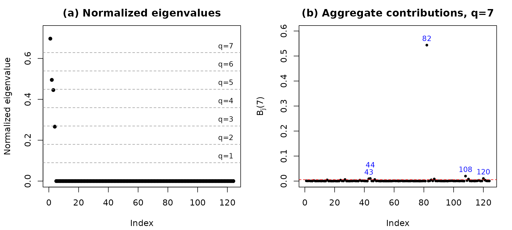
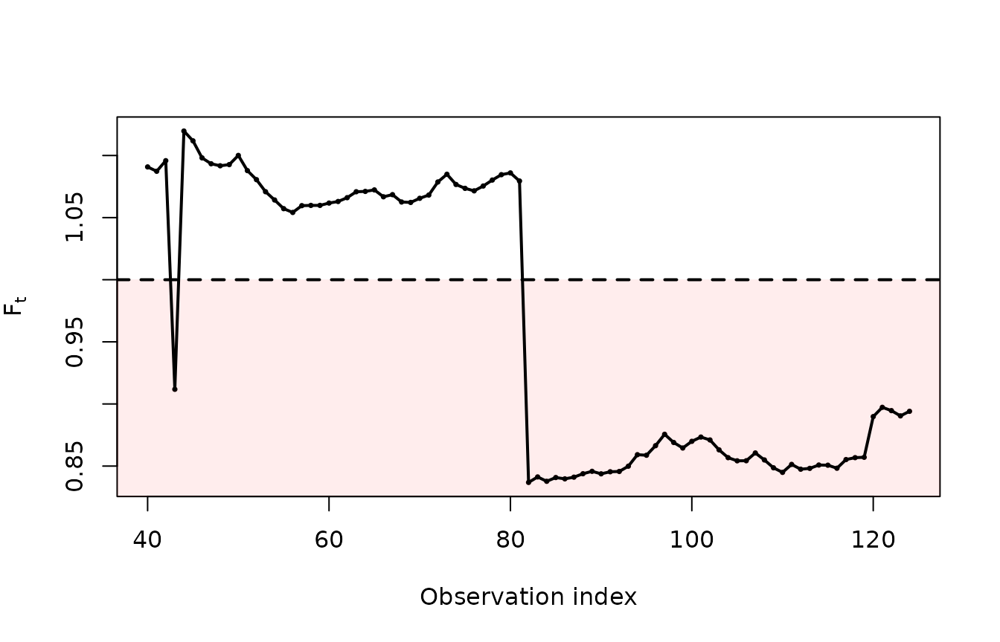
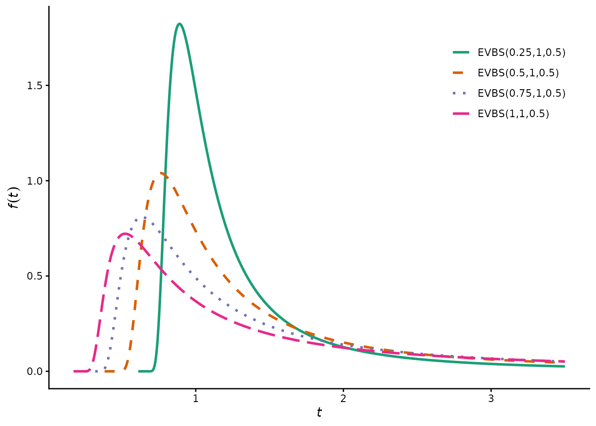

Local influence diagnostics for the EVBS regression model
Raydonal Ospina
Source:vignettes/evbsreg.Rmd
evbsreg.RmdIntroduction
The evbsreg package implements local influence diagnostics for the Extreme-Value Birnbaum–Saunders (EVBS) regression model. This vignette walks through the complete workflow: fitting the model, diagnosing influential observations, assessing model adequacy, and interpreting the results, using the bundled Itajaí wind gust dataset. It then covers the quantities that follow from a fitted model (finite upper endpoint, return levels and expected shortfall), the prospective monitoring index, and the same diagnostics under a generalized extreme-value (GEV) regression.
Every result below is reproducible: the computations are
deterministic except the simulated envelope and the block bootstrap,
which are run after set.seed().
The data
The itajai dataset contains 124 monthly maximum wind
gust speeds and the corresponding daily mean atmospheric pressure,
recorded at INMET station A-868 in Itajaí, Brazil, from July 2010 to
October 2020.
data(itajai)
str(itajai)
#> 'data.frame': 124 obs. of 3 variables:
#> $ month : int 1 2 3 4 5 6 7 8 9 10 ...
#> $ wind : num 11.7 16.4 10.5 17.2 11.2 12.3 14 17.1 13.7 14.8 ...
#> $ pressure: num 1020 1013 1015 1009 1008 ...
summary(itajai$wind)
#> Min. 1st Qu. Median Mean 3rd Qu. Max.
#> 8.20 12.15 14.30 14.73 17.02 33.90Observation 82 is the catastrophic event of 26 April 2017 (33.9 m/s).
Fitting the model
The design matrix must include an intercept column. We model the location of the log-EVBS distribution as a linear function of atmospheric pressure.
X <- cbind(1, itajai$pressure)
fit <- evbsreg.fit(X, itajai$wind)
data.frame(
Parameter = c("beta0", "beta1", "alpha", "gamma"),
Estimate = round(fit$coeff, 4),
SE = round(c(fit$stderrors, fit$stderroralpha, fit$stderrorgama), 4)
)
#> Parameter Estimate SE
#> 1 beta0 25.5148 3.3338
#> 2 beta1 -0.0227 0.0033
#> 3 alpha 0.1857 0.0127
#> 4 gamma -0.1551 0.0472Both regression coefficients are highly significant:
round(fit$pvalues, 4)
#> x1 x2
#> 0 0Local influence diagnostics
The cnc_diagnostics() function computes the conformal
normal curvature diagnostics from the fitted object.
diag <- cnc_diagnostics(fit)
## Top four normalized eigenvalues
round(head(diag$eigenvalues_norm, 4), 5)
#> [1] 0.69678 0.49511 0.44547 0.26630
## Observations flagged at q = 7
which(diag$Bj[7, ] > diag$bq[7])
#> [1] 27 43 44 47 82 87 108 110 120The two-panel diagnostic figure shows the normalized eigenvalues (left) and the aggregate contributions (right). Observation 82 dominates.
plot_cnc(diag, q = 7)
Deletion analysis
We refit the model without the flagged observation and measure the relative change in each parameter.
fit82 <- evbsreg.fit(X[-82, ], itajai$wind[-82])
rc <- 100 * (fit82$coeff - fit$coeff) / abs(fit$coeff)
names(rc) <- c("beta0", "beta1", "alpha", "gamma")
round(rc, 2)
#> beta0 beta1 alpha gamma
#> -3.24 3.64 0.25 -73.67The tail-shape parameter changes by -73.7%, while the regression coefficients and the shape parameter change by at most 3.6%. The influence is therefore concentrated almost entirely on the tail.
Model adequacy
Randomized quantile residuals should be approximately standard normal under a correct specification. For a continuous response they are deterministic, .
r <- rqrandomized(X, itajai$wind)
shapiro.test(r)
#>
#> Shapiro-Wilk normality test
#>
#> data: r
#> W = 0.98727, p-value = 0.3021The simulated envelope is random, so fix the seed to reproduce it.
set.seed(2023)
envelope_qq(X, itajai$wind, nrep = 100)#> Warning in par(oldpar): "m" is not a graphical parameterEndpoint, return levels and expected shortfall
When the fitted EVBS distribution has a finite upper endpoint, which depends on the covariate through the linear predictor . At the covariate value of observation 82:
eta82 <- sum(X[82, ] * fit$betahat)
c(endpoint = unname(evbs_endpoint(eta82, fit$alphahat, fit$gamahat)),
observed = itajai$wind[82])
#> endpoint observed
#> 47.76947 33.90000Return levels come from the exact quantile function
qevbs(). With monthly maxima, period is in
months, so 12 * 50 is the level exceeded on average once
every 50 years (at the given covariate value, here the mean
pressure):
evbs_return_level(fit, x = c(1, mean(itajai$pressure)),
period = 12 * 50, es = TRUE)
#> return_level expected_shortfall
#> 27.60566 29.20929
## 10-, 50- and 100-year levels at the same covariate value
qevbs(1 - 1 / (12 * c(10, 50, 100)),
eta = sum(c(1, mean(itajai$pressure)) * fit$betahat),
alpha = fit$alphahat, gama = fit$gamahat)
#> [1] 24.50267 27.60566 28.79564Note that
is a scale, not the conditional median; conditional quantiles always
come from qevbs().
Standard errors under serial dependence
If the residuals show serial dependence, moving-block bootstrap standard errors are a safer guide than the information-based ones:
set.seed(2023)
bb <- evbs_block_boot(X, itajai$wind, L = 4, B = 100)
round(bb$se, 4)
#> beta0 beta1 alpha gama
#> 3.5717 0.0035 0.0121 0.0836Prospective monitoring
evbs_monitor() refits the model at each instant after a
burn-in, finds the observation flagged by the curvature diagnostic, and
compares it with the fitted upper endpoint. Values of the index
below one mean that the flagged observation is close to or beyond what
the model can accommodate.
ct <- evbs_monitor(X, itajai$wind, burn = 40)
ct[ct$F < 1, c("t", "flagged", "gama", "endpoint", "F")][1:4, ]
#> t flagged gama endpoint F
#> 4 43 43 -0.3025987 19.78611 0.9118021
#> 43 82 82 -0.1413614 28.36888 0.8368401
#> 44 83 82 -0.1359969 28.51878 0.8412620
#> 45 84 82 -0.1376183 28.39953 0.8377442
plot(ct)
Apart from a single dip at
,
the index stays above one until the April 2017 event enters the sample
at
,
and stays below one from then on. Setting use = "max" gives
the naive version that always deletes the sample maximum instead of the
observation flagged by the curvature.
Comparison with GEV regression
The same diagnostics are available for a GEV regression fitted to the response scale. Centre the covariates first: the GEV likelihood is poorly conditioned otherwise.
Xc <- cbind(1, itajai$pressure - mean(itajai$pressure))
gfit <- gevreg.fit(Xc, itajai$wind)
gfit$convergence
#> [1] 0
gdiag <- cnc_diagnostics_gev(gfit)To compare influence rankings, use the same statistic for both
families: colMeans(diag$Bj) for the EVBS fit and
Bbar for the GEV fit.
Bbar_evbs <- colMeans(diag$Bj)
head(order(Bbar_evbs, decreasing = TRUE), 3)
#> [1] 82 108 6
head(order(gdiag$Bbar, decreasing = TRUE), 3)
#> [1] 82 6 108
cor(Bbar_evbs, gdiag$Bbar, method = "spearman")
#> [1] 0.9450071The prospective index under the GEV model is
gev_monitor(Xc, itajai$wind).
Density shapes
The package also provides the density-plotting functions used for the density figures of the paper.

Reproducing the full study
Five standalone scripts reproduce the density figures, the Itajaí
application and the Monte Carlo study. They write only to
tempdir(). After installation they are available via
system.file():
# Density figures
source(system.file("scripts/script_01_density_figures.R", package = "evbsreg"))
# Itajai application
source(system.file("scripts/script_02_itajai_application.R", package = "evbsreg"))
# Monte Carlo study; set m <- 500 inside for a quick check
source(system.file("scripts/script_03_simulation_scenario1.R", package = "evbsreg"))
source(system.file("scripts/script_04_simulation_scenario2.R", package = "evbsreg"))
source(system.file("scripts/script_05_simulation_scenario3.R", package = "evbsreg"))References
Ferreira, M., Gomes, M. I., and Leiva, V. (2012). On an extreme value version of the Birnbaum–Saunders distribution. REVSTAT, 10, 181–210.
Ospina, R., Lima, J. I. C., Barros, M., and Macêdo, A. M. S. (2026). Local influence diagnostics for extreme-value Birnbaum–Saunders regression, with an application to wind-gust extremes. Submitted.